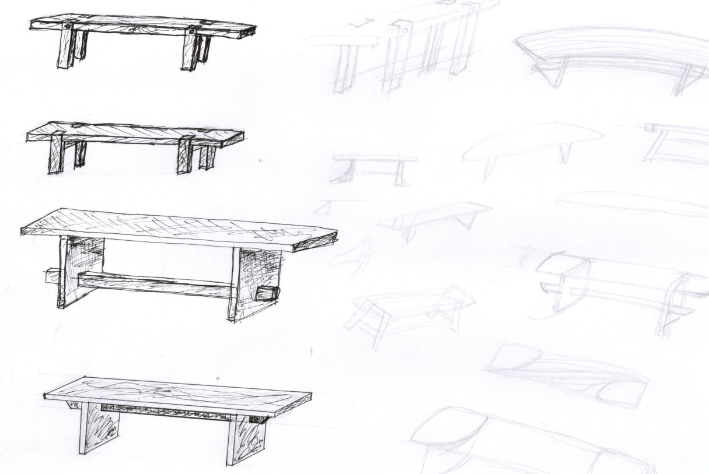
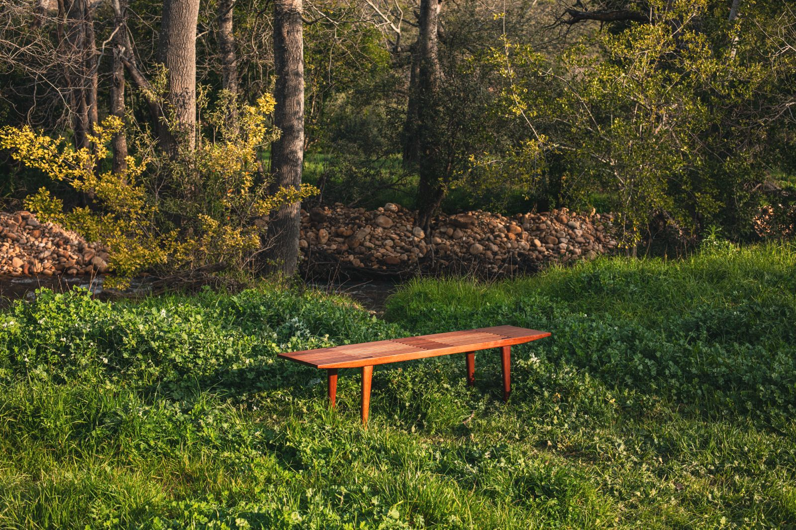
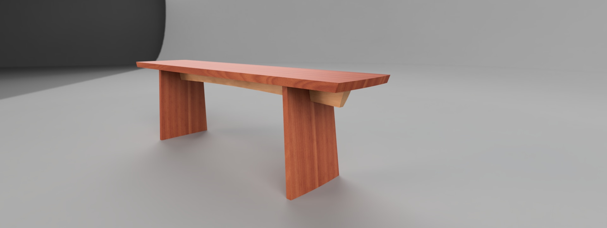
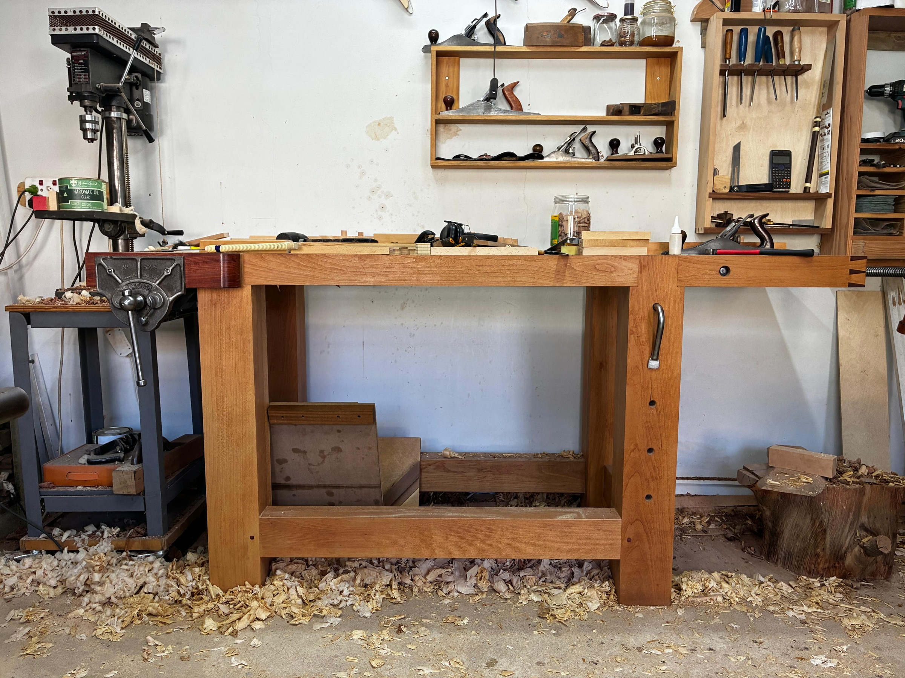

Sketch
Exploring the idea
Form, proportion and function begin with loose drawings made by hand.

Based in Cape Town, South Africa, I design and make contemporary furniture where modern design meets traditional craftsmanship.
Commissions
Each commission develops through conversation, drawing and making. The process allows every piece to respond to its purpose, material and setting.

Sketch
Form, proportion and function begin with loose drawings made by hand.

Refine
The design is refined in CAD to resolve dimensions, structure and construction.
Make
The final piece is shaped, joined and finished in the workshop.
